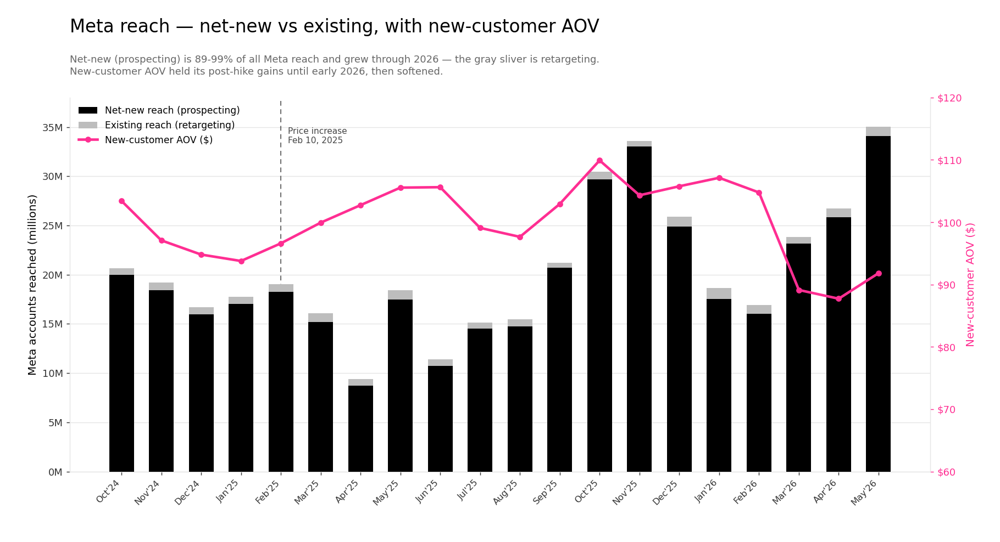

Validating Mandar's hypothesis with 28 months of data — Jan 2024 through May 2026.
The new-customer acquisition crisis is real and severe, but pricing is one of three concurrent forces, not the singular cause.
Launch the queued Intelligems "Offer Test · Apr 25" this week (zero setup cost) and build a Discovery Set funnel test in parallel. Pull Meta biddable-audience numbers from Malik to disambiguate audience-pool-size vs conversion-rate. Do not pursue a permanent price rollback — JRB is competitively priced and the lever to pull first is welcome-offer A/B, not list-price.
From Mandar Shinde's DM with Cody, May 28, 2026:
"FC_Facebook as a signal variable... is a direct representation of biddable audience. Your net new signal was pretty much not holding. During Memorial Day — which makes me believe price may be a decent factor in expanding that audience. Biddable net new audience is dropping. My gut says as we get this past week data, we can evaluate if our discount thesis (price points) is right. We don't see a similar pattern with Google." Mandar Shinde · Slack DM · May 28, 2026
The hypothesis decomposed:
"Yea would be hard to pinpoint as the exact factor since there are so many other things that could have impacted it — but would be interesting to see the trend line." Ben Rosenwald · Slack DM · May 28, 2026
That's exactly what this analysis does — pulls the trend line, separates the price-hike signal from the surrounding noise, and assigns weight to each force.
The clean, attribution-free signal: Shopify-direct new customer count and the average basket those customers spent. Marker shows the Feb 10, 2025 price increase.
Weekly granularity around the price increase. The hike did NOT cause a sudden break — it landed in basket without an immediate volume collapse.
| Window | Avg NC / week | Avg new AOV | Read |
|---|---|---|---|
| Pre-hike (4 wks) | 13,874 | $93.30 | Stable baseline |
| Hike week (Feb 10) | 15,032 | $94.88 | Slight uptick — last-chance buying |
| Post-hike (8 wks) | 13,703 | $100.39 | −1.2% volume, +7.6% AOV |
The price increase was absorbed at unit-economics level (+8% AOV) without an immediate NC collapse. The bigger story is the macro trend already underway: Jan 2025 NCs were already down 37.7% YoY before the hike.
My first pass blended all Google together and reported a misleading 5.1× CPA increase. That's wrong: Google doesn't correlate with incrementality. Brand search runs $4 CPA at 26.7× ROAS (pure non-incremental capture) and deflates the blended number. The only apples-to-apples comparison to Meta is Google prospecting — YouTube + Demand Gen.
| Quarter | Meta CPA | Google Prospecting CPA | Google Prospecting ROAS |
|---|---|---|---|
| 2024-Q1 | $46 | $48 | 2.0× |
| 2024-Q4 | $57 | $38 | 2.8× |
| 2025-Q2 | $63 | $59 | 1.8× |
| 2025-Q4 | $75 | $90 | 1.2× |
| 2026-Q2 | $100 | $117 | 0.8× |
| Growth | 2.2× | 2.4× | 2.0× → 0.8× |
The two prospecting engines degraded in lockstep. This is not "Google is worse" — it's prospecting saturating symmetrically across both platforms. That symmetry does not refute Mandar; it strengthens the net-new-audience-ceiling read. (It still can't isolate price from creative, offer, or market size — but it does say the ceiling is real and cross-platform.)
Why Meta's blended CPA is trustworthy and Google's wasn't: Meta has no cheap brand-capture bucket — it's ~entirely prospecting, so its blended number is already a clean prospecting read. Google's blend mixes $4 brand-capture with $117 prospecting.
Inside Google prospecting, the spend mix shifted hard — and we traded a high-ROAS channel for a low-ROAS one. Some of the blended-CAC deterioration is this decision, not market saturation or price.
Worth a dedicated review independent of pricing: Demand Gen has run at sub-1.2× ROAS for three-plus quarters. Either it needs fixing (creative, targeting, bidding) or some of that budget should rotate back toward what worked.
Pulled straight from the Meta Ads API: reach, frequency, and the new-vs-existing (prospecting) split. This tests Mandar's "net new reach is dropping" claim directly — and points the diagnosis at conversion, not reach.

Net-new-reach → first-purchase conversion fell 2-4× — from ~0.11-0.16% in 2025 to ~0.03-0.06% in 2026. We're putting JRB in front of more new people and converting a far smaller fraction of them. That is exactly what a price/offer barrier looks like — which strengthens Mandar's underlying thesis even though the "reach is dropping" framing doesn't hold in the raw data.
Reconciliation needed: Mandar's declining "net new reach" red line likely measures net-new activations within bid caps (a cost-constrained metric), not raw reach. His screenshot + Malik's 90-day pull will confirm. Either way, the actionable conclusion is the same: the lever is conversion of the new audience (offer, price, landing page, creative), not finding more of them.
Mandar's strongest argument: when JRB discounts, NCs spike. The pattern is real and consistent — but it's also been there for two years. What's new is the smaller absolute audience the lifts pull from.
| Month | New Customers | vs Trend Baseline | Discounts | Read |
|---|---|---|---|---|
| May 2024 (Memorial Day) | 101,283 | +50% | $255K | Sale spike |
| Nov 2024 (BFCM) | 101,069 | +63% | $1.14M | Promo spike |
| May 2025 (Memorial Day) | 84,857 | +60% | $1.31M | Sale spike |
| Oct 2025 | 88,952 | +110% | $368K | Strong fall promo |
| Nov 2025 (BFCM) | 93,479 | +120% | $4.16M | Huge promo |
| May 2026 (Memorial Day) — Mandar's signal | 49,140 | +18% | $1.12M | Weakest lift in series |
May 2026 Memorial Day lift was the most modest of the series. Two possible reads:
Either read supports the case for testing more aggressive welcome offers — but neither validates a permanent list-price rollback.
Average review rating, recommendation %, and review volume all declined post-Feb 2025. Directional support for value-perception decline — though we can't isolate "price" specifically without review-text access.
Feb 2026's avg crashed to 4.10, the low of the series. Cause: a one-month spike in 1-star reviews — 14 of 99 reviews (14.1%) vs the trailing-6-month norm of ~6.8%. About 7 extra angry reviews dragged the average down. Important context: this is the Junip store-review widget (~99 reviews/month covering service, shipping, and site experience), not product reviews — so the small sample is fragile to a handful of bad experiences.
| Month | 1★ | 5★ | n | Avg |
|---|---|---|---|---|
| Dec 2025 | 13 | 129 | 178 | 4.39 |
| Jan 2026 | 6 | 73 | 93 | 4.45 |
| Feb 2026 | 14 | 67 | 99 | 4.10 |
| Mar 2026 | 7 | 70 | 89 | 4.48 |
| Apr 2026 | 2 | 83 | 98 | 4.64 |
| May 2026 | 2 | 59 | 69 | 4.64 |
It fully recovered — 4.48 in March, 4.64 in April and May. A one-month blip, not a sustained collapse. The specific driver of the 1-star cluster (likely post-holiday shipping/returns or a Valentine's fulfillment backlog) needs the review text or a Richpanel CS pull for Feb 2026 — neither is wired into this analysis yet. Worth a quick Richpanel check if we want the exact cause, but it does not look structural.
JRB is NOT priced out of line vs clean-beauty premium peers. Westman is higher; Merit and Saie are at parity; Tower 28 and Rare Beauty have built large audiences by pricing below $25.
| Category | JRB | JRB Price | Competitor Range | Position |
|---|---|---|---|---|
| Foundation balm / stick | Miracle Balm | $38 | $32 (Tower 28) → $68 (Westman) | Mid-pack |
| Tinted foundation | What The Foundation | $46 | $38 (Merit) → $68 (Westman) | Mid-pack, slightly above Merit / Saie |
| Cream blush | Lip and Cheek Stick | $36 | $20 (Tower 28) → $24 (Saie) | Premium vs mass-cool |
| Mini entry SKU | Mini Miracle Balm | $20 | $15 (Saie Mini) → $23 (Rare full) | Competitive at entry tier |
The strategic read: JRB's pricing is consistent with the premium-clean-beauty tier. But the $38-46 unit prices sit above the $20-30 impulse-purchase threshold that drives Meta-paid first-time conversion at scale. Tower 28 and Rare Beauty have built large net-new audiences specifically by pricing below $25 — this is the impulse zone. The JRB Mini line ($19-24) is correctly priced for impulse but appears under-leveraged for paid acquisition.
Critical gap: across Intelligems history, JRB has run only one US-relevant pricing experiment in 3 years.
| Test | Status | Date | Notes |
|---|---|---|---|
| UK 6 Way Price + FS Threshold | Ended | Mar – Aug 2023 | UK-only, free-shipping threshold focus, 3 years stale |
| Discount tests | — | — | Zero |
| Bundle tests | — | — | Zero |
| Offer Test · Apr 25 | Pending (not started) | Created Apr 25, 2026 | 5 variations ready to launch — natural vehicle for the Mandar hypothesis |
The queued "Offer Test · Apr 25" with 5 variations is the lowest-cost-to-launch validation of Mandar's hypothesis. It just needs to go live.
| Sub-claim | Verdict | Evidence |
|---|---|---|
| Biddable net new audience on Meta is dropping | Confirmed | Meta purchases −56%, CPA 2.4× |
| Memorial Day spike = pent-up price-sensitive demand | Partially confirmed | All sale periods lift NCs 50-120%. May '26 lift was weakest in series at +18%, suggesting underlying audience compression beyond price elasticity. |
| Price is a meaningful factor in audience expansion | Partially confirmed | Sale-period evidence + post-hike rating decline + AOV-confirmed +13% basket lift. But JRB pricing is mid-pack vs peers, not an outlier. |
| We don't see this pattern with Google | Confirmed, with nuance | Apples-to-apples, Google prospecting degraded 2.4× — matching Meta's 2.2×. Both saturating in lockstep. The blended "Google 5.1×" was an artifact of cheap brand-search capture, now retracted. Symmetric saturation strengthens the audience-ceiling read. |
| Price is THE main lever to unlock new customers | Weak | Audience saturation predates the price hike. Price is one of several levers — and not the cheapest one to test. |
Five tests, sized for 4-week decisions. Pick 2-3 to run. Each names the lever, the risk, and the decision criterion.
5 variations of welcome-offer / bundle messaging — already configured, just needs to go live.
Dedicated LP + paid Meta drive against existing $55 bundle SKU. Hits free-shipping threshold.
Re-target Meta acquisition spend onto Mini SKUs ($19-32 entry zone). Pause MB / WTF acquisition on test budget for 30 days.
Gift-with-purchase instead of price discount. Cody flagged in the Growth Stand-Up.
Mandar's explicit ask from today's DM. Disambiguates audience-pool-size vs conversion-rate as the binding constraint.
Lower 2-3 entry SKUs by 10-15% on a permanent basis (e.g. Mini MB $20→$18).
A paste-ready Slack message summarizing what the data says — copy-edit to taste.